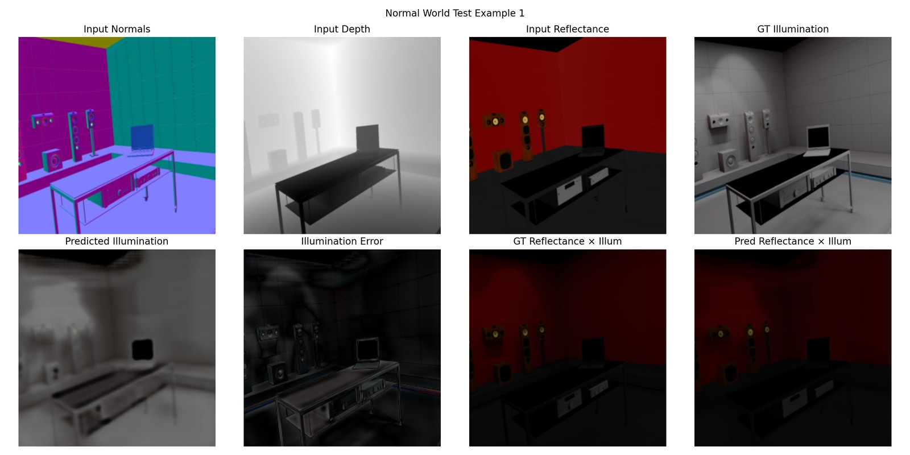
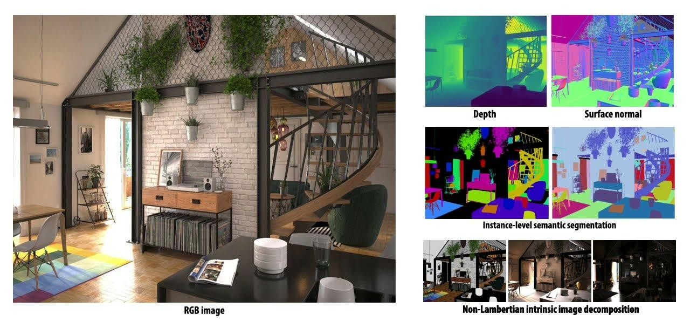
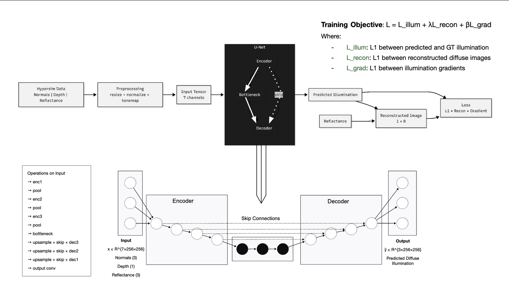
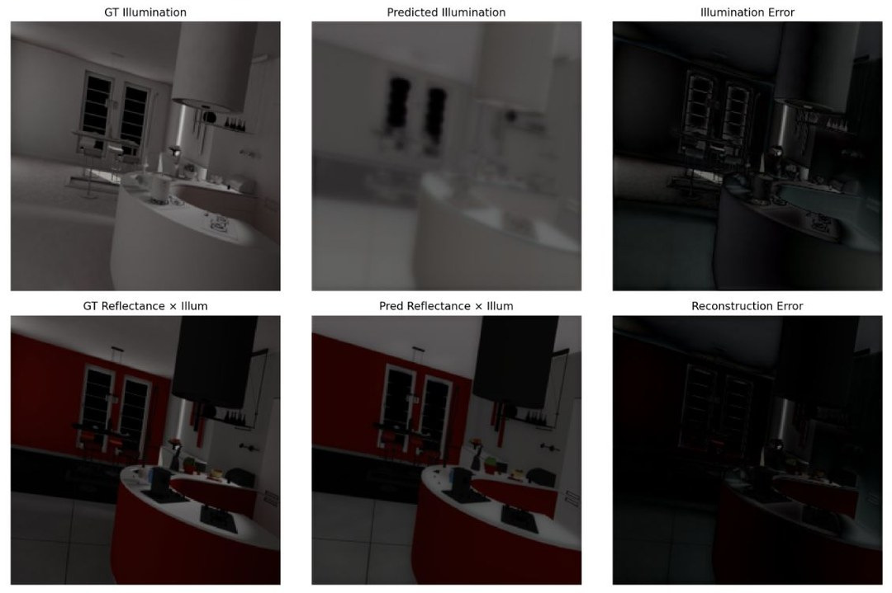
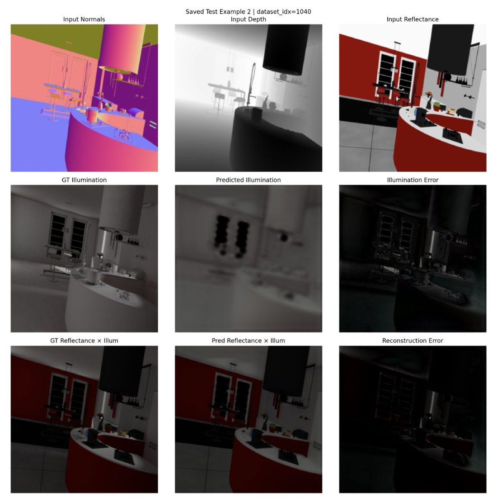
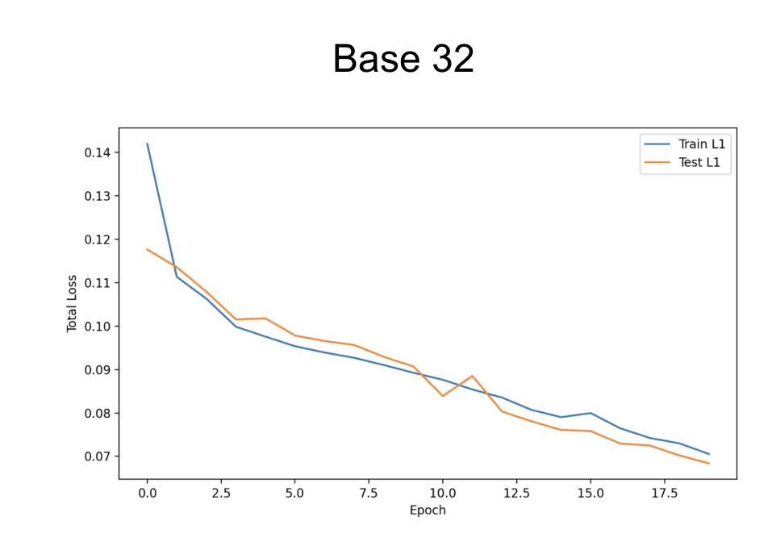
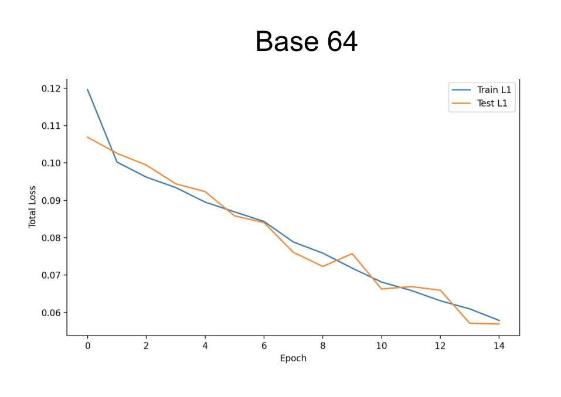
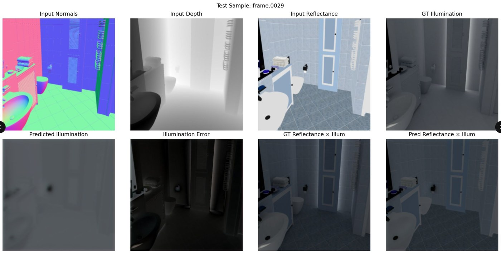

Neural Shading for Indoor Architectural Scenes
A U‑Net trained to predict diffuse illumination from geometry and material instead of simulating it. It recovers the soft structure of light in a room and never recovers a shadow. Diagnosing that limit is the result.
- Type
- Research project
Deep Learning for Computer Graphics - Role
- Solo. Pipeline, model, experiments, analysis
- Advisor
- Prof. Corey Toler-Franklin
- Stack
- PyTorch · U‑Net · HDF5 · AWS (Tesla T4)
- Data
- Hypersim. ~2,000 samples, 10 scenes, 80/20 split

- Question
- Can a network infer diffuse illumination from local geometric and material information alone?
- Approach
- A U‑Net over seven channels of Hypersim scene buffers, with five controlled experiments across normals, loss design, and capacity.
- Result
- Low-frequency illumination is recovered reliably. Sharp shadows never are. Capacity and loss design were ruled out by experiment, leaving the input representation.
Premise
Physically-based rendering produces realistic light by simulating how it travels, bouncing and occluding and accumulating across an entire scene. It is accurate and it is slow.
Neural shading asks whether part of that can be learned instead. Following Nalbach et al.’s Deep Shading, the idea is to map per-pixel scene attributes directly to appearance and skip the simulation.
I narrowed it to one supervised subproblem: predict diffuse illumination from surface normals, depth, and diffuse reflectance. For architectural work the appeal is fast, plausible interior lighting without a render farm. The interesting part turned out to be where that shortcut breaks.
Data

Apple’s Hypersim provides photorealistic synthetic interiors with dense per-pixel buffers already factored into reflectance, illumination, and a residual. Because the renderer knows what the illumination was, it can serve as a training target.
- Inputs (7 channels)
- Surface normals for orientation, log-scaled depth for layout, diffuse reflectance for material.
- Target (3 channels)
- Diffuse illumination, tone mapped with
x / (1 + x)to handle high dynamic range. - Engineering note
- Early training was slow because every epoch re-opened HDF5 files and re-ran preprocessing. Caching preprocessed tensors to disk took GPU utilization from intermittent to saturated, which is what made the controlled experiments affordable.
Model
A U‑Net: the encoder steps 7 → 32 → 64 → 128 channels while halving resolution to a 256-channel bottleneck at 32 × 32. The decoder upsamples back, concatenating skip features at each stage so high-frequency detail can cross the bottleneck.
The predicted illumination is then recombined with reflectance,
reflectance × illumination, to reconstruct diffuse
appearance. That recombination also becomes a loss term, and it turned out to
be the most important one in the project.

Experiments
The baseline, plain L1 between predicted and ground-truth illumination, converged numerically and produced blurry averaged light. Everything after that was an attempt to find out why.
Camera vs. world normals
World-space normals gave slightly better spatial coherence. Lighting depends on how a surface sits in the room rather than relative to the camera.
Reconstruction loss
L1 on reflectance × illumination as well as illumination. Supervising the rendered result produced the clearest improvement of the project.
Gradient loss
Compared horizontal and vertical illumination gradients to push for sharper transitions. More spatial variation, still no hard shadow boundaries.
Model capacity
Doubled feature widths from base‑32 to base‑64. Optimization improved marginally, visual quality did not.
Perceptual loss
Compared reconstructions in VGG16 feature space to escape the blur pixel losses reward. Slight brightness shifts, no recovery of edges.


Base‑32 total loss drops from 0.142 to 0.070 on train and 0.118 to 0.068 on test over twenty epochs. Base‑64 reaches a slightly lower floor in fewer epochs. In both runs the two curves stay locked together, which is healthy, well-behaved optimization with no overfitting.
And yet the images barely change. That gap is the most useful thing the experiments produced: the loss and the goal had come apart. L1 error keeps rewarding a smoother average, which is the wrong target.


Result
The best model, using world-space normals with reconstruction and gradient loss, reliably recovers the broad brightness structure of a scene (Fig. 01). It knows which wall is brighter, roughly where light falls off, and how the space is laid out. Multiplied back through reflectance, the reconstruction comes genuinely close to the target.
What it never recovers is sharp shadows, corner darkening, occlusion boundaries, and contact regions. The error map concentrates precisely on edges and object contacts rather than spreading evenly, which points directly at what the inputs are missing.

The loss kept improving. The shadows never arrived.
FindingDiagnosis
A shadow exists because something the viewer may not be able to see is blocking a light source the viewer may also not be able to see. Predicting one requires knowing where the lights are, what the full geometry is, and what occludes what.
The model receives none of that. It gets normals, depth, and reflectance for visible pixels from a single viewpoint, with no light positions, no complete 3D geometry, no visibility relationships, and no multi-view context. Two rooms with identical visible geometry and materials but different light placement produce identical inputs and different correct answers.
Given contradictory targets for identical inputs, the optimum under an L1 objective is the average. The blur is the correct answer to an underdetermined question, which is why no loss function and no amount of capacity fixed it.
- Screen space only. One camera, visible surfaces only. No occluded geometry and no scene-level context enter the model at any point.
- No light supervision. Light source position, intensity, and visibility are never provided.
- Dataset scale. Roughly 2,000 samples is small for image synthesis. Scale is unlikely to be the core issue, but it has not been ruled out.
Outcome
Optimize the consequence
Supervising the rendered result, rather than the illumination tensor alone, produced the single largest visual gain of the project.
Healthy curves can mislead
Train and test fell together for twenty epochs while output quality stalled. The metric and the objective had separated.
Representation sets the ceiling
Capacity, loss design, and normal frames were all ruled out by experiment. What remained was the input representation itself.
The productive next step is architectural rather than numerical: give the network light positions, multi-view context, or learned scene-level features, so the question it is being asked has a single correct answer. Ruling out the alternatives one at a time is what made that diagnosis trustworthy.
- Nalbach et al., Deep Shading: Convolutional Neural Networks for Screen-Space Shading (2017).
- Roberts et al., Hypersim: A Photorealistic Synthetic Dataset for Holistic Indoor Scene Understanding (ICCV 2021). Source of Fig. 02 and the training data.